← 返回阅读库 · 原论文目录
论文讲解阅读文档 · 论文精读 · v254
砍掉90% Token！源神要颠覆大模型训练范式？
视频时长 00:10:57；讲解文字 3,848 字符；提取讲解画面 125 张。按视频原顺序阅读，每段文字保留时间戳。
文字来自整段视频的自动语音转写，按自然停顿分段，并与 PPT / 论文页面 / 演示画面对齐。未将讲解压缩为摘要；术语、数字和口述公式请结合画面及原论文核对。 阅读稿已校正规范部分明确术语误识别；原始逐字稿和每处修改记录另行保留。
讲解画面为源视频截图（640×360），不是可编辑 PPT 文件。全片按每秒 2 帧扫描内容变化，逐步展开页保留；连续动画保留代表画面。清晰度受源视频限制。
下载完整资料包 · 含离线 HTML、PDF、Word、全部 PPT 画面和字幕。
原论文与材料
DeepSeek-OCR: Contexts Optical Compression · 下载完整 PDF（22 页）
按时间阅读
00:00:00–00:00:02 · 画面 001
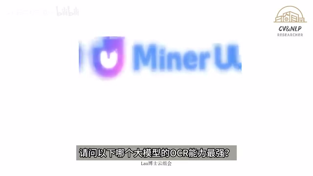
00:00:00–00:00:02 · 画面 001请问以下哪个大模型的 OCR 能力最强？3 2 1 没错，DeepSeek 最新发布的 OCR 模型交出了亮眼答卷。在处理长文本内容时，主流模型往往面临视觉 Tokens 过多、计算成本高的困境，而 DeepSeek-OCR 通过创新的光学二维映射压缩方案，在大幅减少视觉 Tokens 数量的同时实现了出色的性能。
00:00:02–00:00:05 · 画面 002
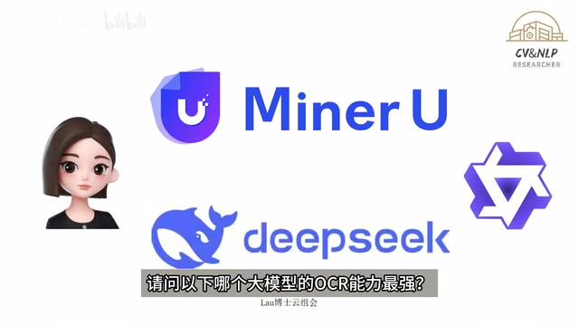
00:00:02–00:00:05 · 画面 00200:00:05–00:00:06 · 画面 003
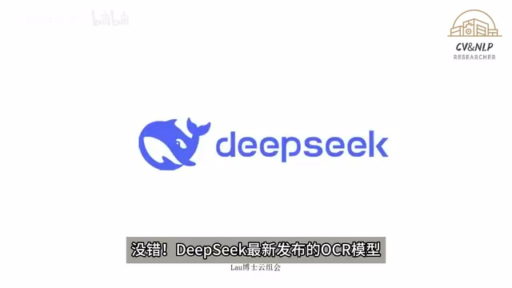
00:00:05–00:00:06 · 画面 00300:00:06–00:00:08 · 画面 004
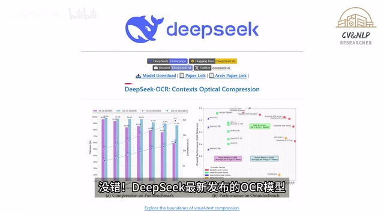
00:00:06–00:00:08 · 画面 00400:00:08–00:00:10 · 画面 005
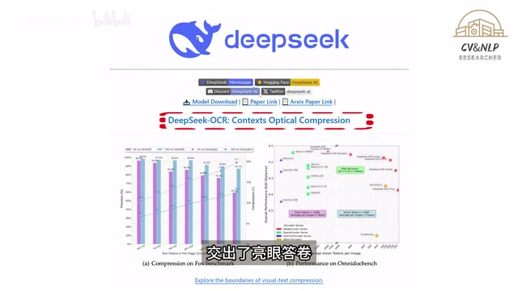
00:00:08–00:00:10 · 画面 00500:00:10–00:00:11 · 画面 006
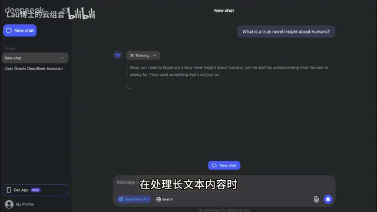
00:00:10–00:00:11 · 画面 00600:00:11–00:00:15 · 画面 007
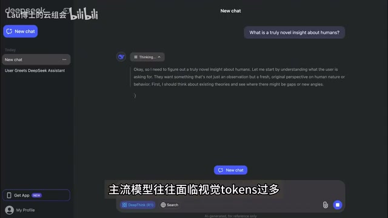
00:00:11–00:00:15 · 画面 00700:00:15–00:00:19 · 画面 008
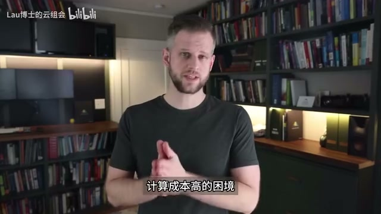
00:00:15–00:00:19 · 画面 00800:00:19–00:00:20 · 画面 009
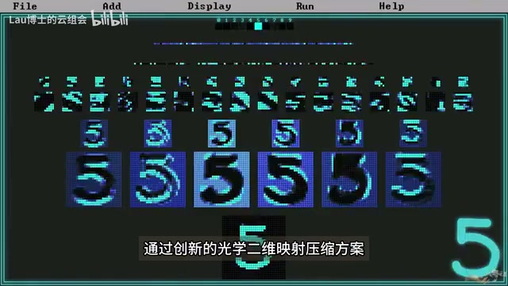
00:00:19–00:00:20 · 画面 00900:00:20–00:00:24 · 画面 010
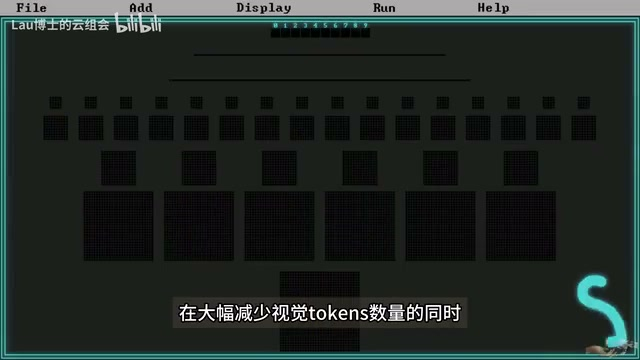
00:00:20–00:00:24 · 画面 01000:00:24–00:00:28 · 画面 011
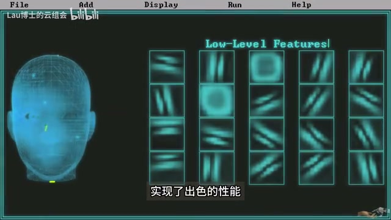
00:00:24–00:00:28 · 画面 011它跳出了传统 OCR 模型的优化框架，从视觉文本压缩的全新视角出发，精准拆解了高效 OCR 系统的两大核心问题：一、如何通过创新编码器架构实现高分辨率输入下的低激活与高压缩比。
00:00:28–00:00:30 · 画面 012
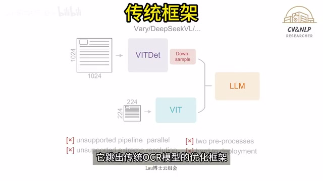
00:00:28–00:00:30 · 画面 01200:00:30–00:00:32 · 画面 013
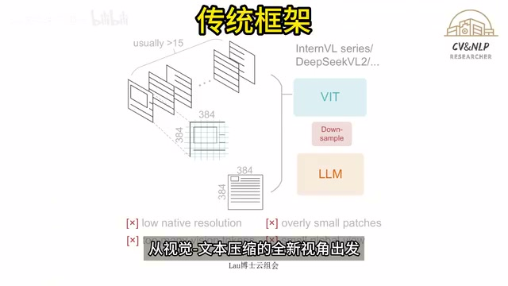
00:00:30–00:00:32 · 画面 01300:00:32–00:00:34 · 画面 014
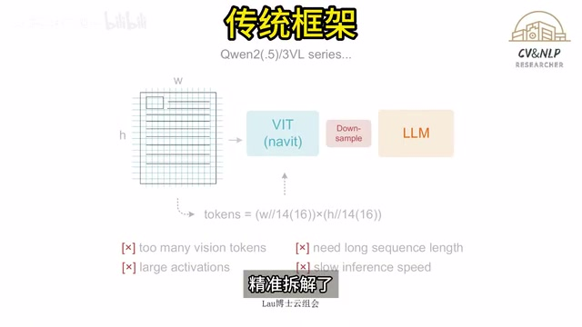
00:00:32–00:00:34 · 画面 01400:00:34–00:00:36 · 画面 015
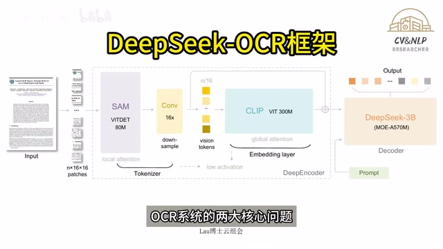
00:00:34–00:00:36 · 画面 01500:00:36–00:00:47 · 画面 016
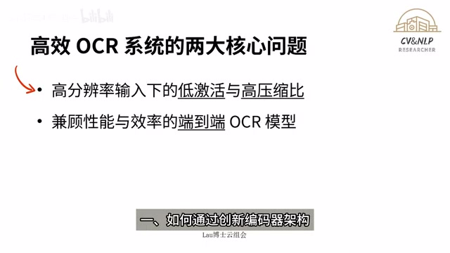
00:00:36–00:00:47 · 画面 016二 、怎样构建兼顾性能与效率的端到端 OCR 模型？更关键的是，它验证了视觉模态作为文本信息高效压缩载体的可行性，为大模型上下文处理的难题提供了新的研究方向。接下来十分钟，我们将用通俗易懂的语言拆解这篇前沿论文，深入探索 DeepSeek-OCR 的技术内核。云组绘 论文精读系列：视觉文本压缩破局之道。
00:00:47–00:00:49 · 画面 017
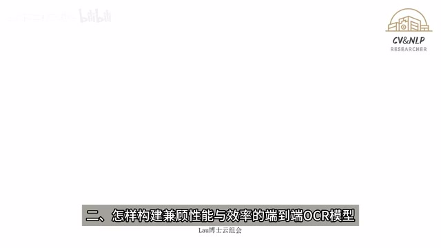
00:00:47–00:00:49 · 画面 01700:00:49–00:00:51 · 画面 018
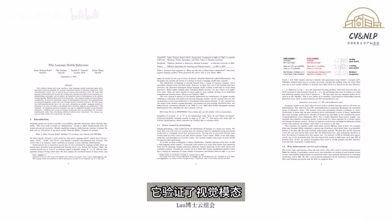
00:00:49–00:00:51 · 画面 01800:00:51–00:00:53 · 画面 019
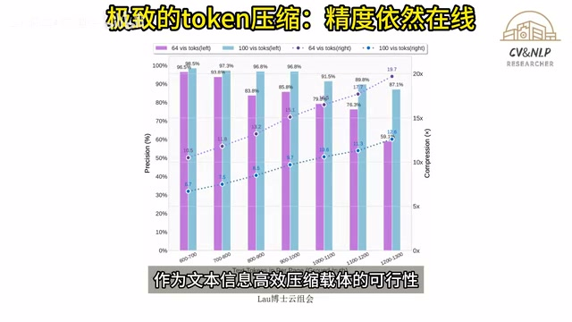
00:00:51–00:00:53 · 画面 01900:00:53–00:00:56 · 画面 020
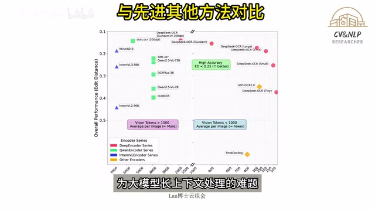
00:00:53–00:00:56 · 画面 02000:00:56–00:00:58 · 画面 021
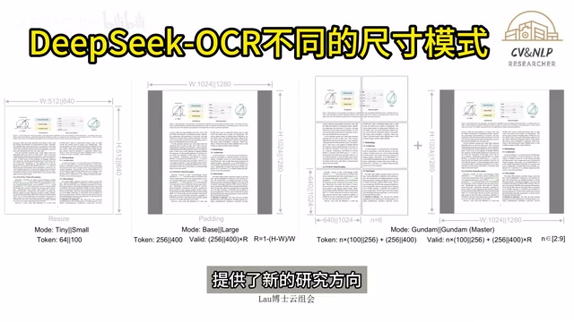
00:00:56–00:00:58 · 画面 02100:00:58–00:01:00 · 画面 022
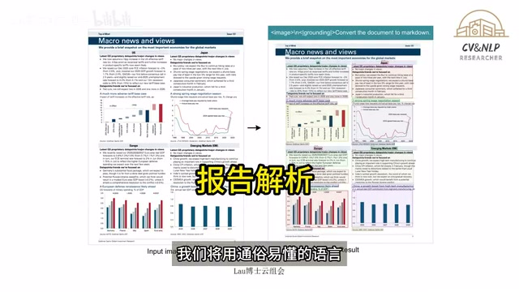
00:00:58–00:01:00 · 画面 02200:01:00–00:01:01 · 画面 023
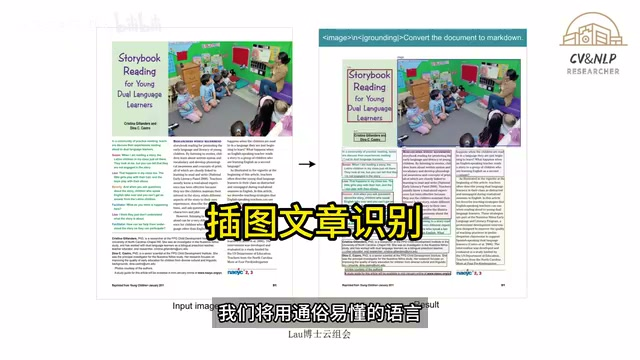
00:01:00–00:01:01 · 画面 02300:01:01–00:01:03 · 画面 024
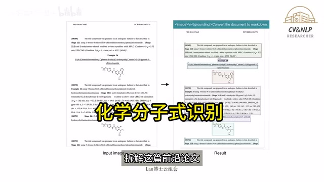
00:01:01–00:01:03 · 画面 02400:01:03–00:01:04 · 画面 025
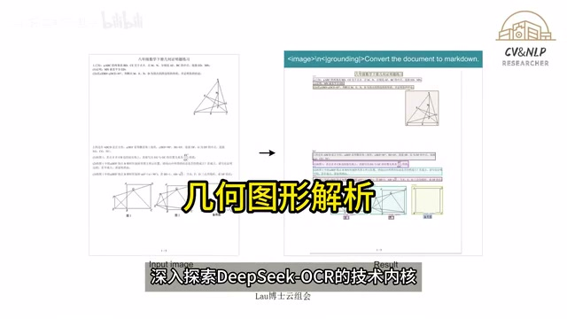
00:01:03–00:01:04 · 画面 02500:01:04–00:01:07 · 画面 026
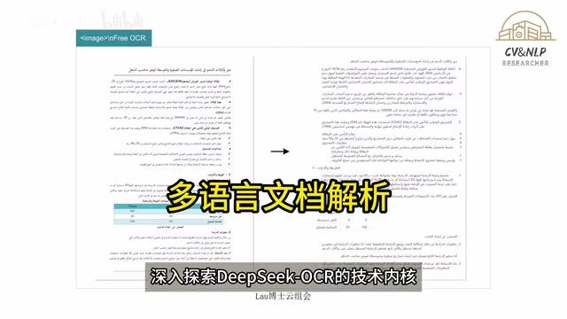
00:01:04–00:01:07 · 画面 02600:01:07–00:01:11 · 画面 027
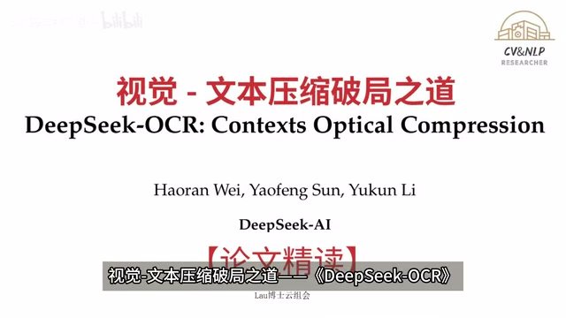
00:01:07–00:01:11 · 画面 027DeepSeek-OCR欢迎来到力武博士的云组会，我们每周都将至少有一篇高质量的论文精读发布出来。相信在一系列的论文学习以后，你就能成为人工智能领域的专家。
00:01:11–00:01:15 · 画面 028
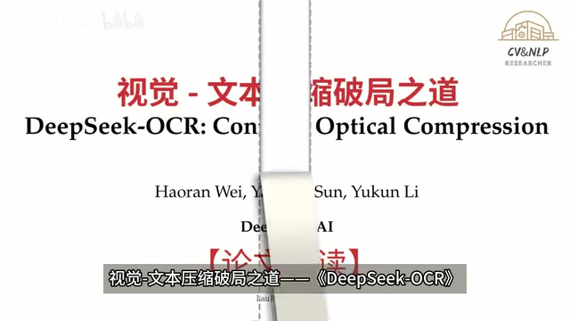
00:01:11–00:01:15 · 画面 02800:01:15–00:01:19 · 画面 029
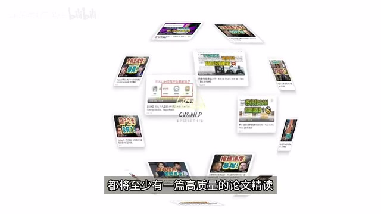
00:01:15–00:01:19 · 画面 02900:01:19–00:01:23 · 画面 030
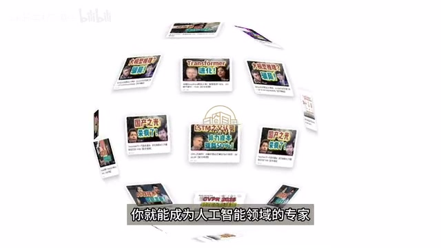
00:01:19–00:01:23 · 画面 03000:01:23–00:01:27 · 画面 031
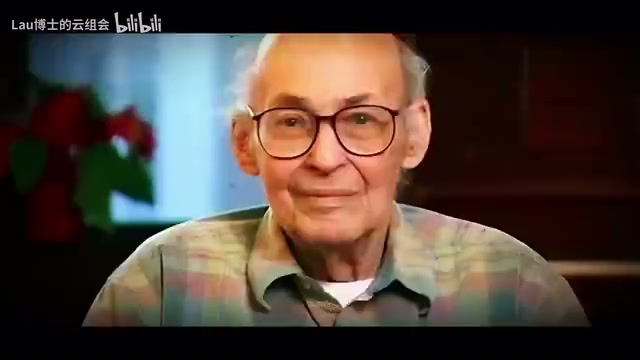
00:01:23–00:01:27 · 画面 03100:01:27–00:01:31 · 画面 032
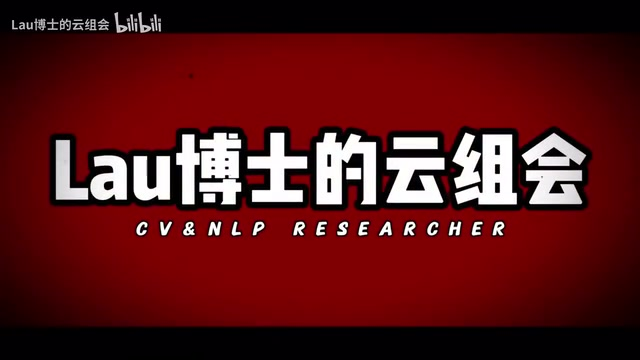
00:01:27–00:01:31 · 画面 03200:01:31–00:01:32 · 画面 033
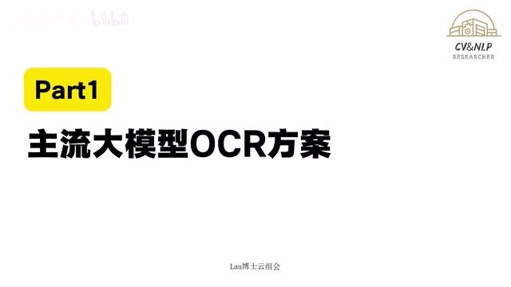
00:01:31–00:01:32 · 画面 033在主会开始之前，我们先来复习一下 OCR 是什么。OCR 全称 Optical Character Recognition，光学字符识别，是一种利用光学技术和计算机技术将印刷或手写在纸上的文字读取出来，并转换成计算机能够处理的文本格式的技术。比如我们常用的 PDF 扫描、图片文字提取、车牌识别等等，都应用了 OCR 技术。
00:01:32–00:01:36 · 画面 034
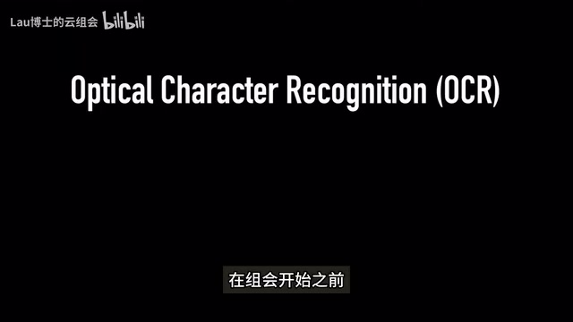
00:01:32–00:01:36 · 画面 03400:01:36–00:01:40 · 画面 035
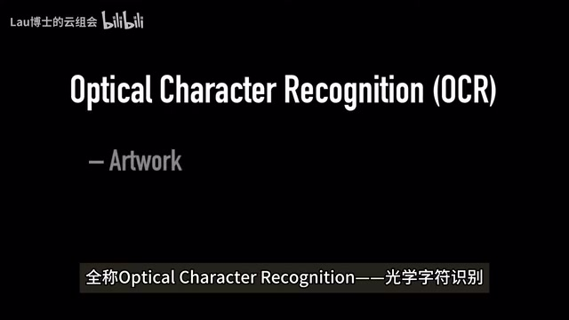
00:01:36–00:01:40 · 画面 03500:01:40–00:01:44 · 画面 036
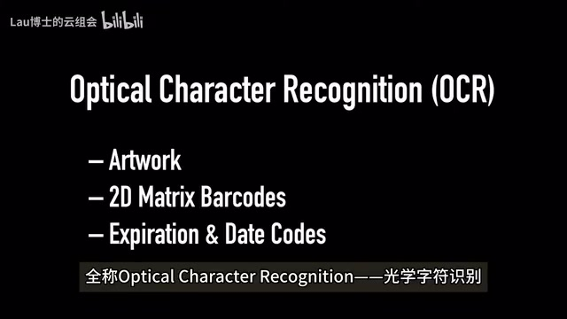
00:01:40–00:01:44 · 画面 03600:01:44–00:01:48 · 画面 037
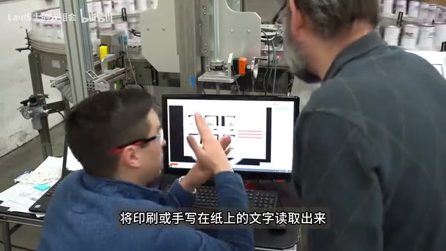
00:01:44–00:01:48 · 画面 03700:01:48–00:01:52 · 画面 038
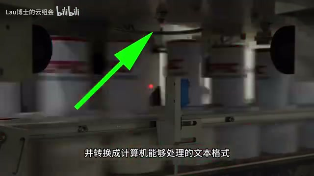
00:01:48–00:01:52 · 画面 03800:01:52–00:01:56 · 画面 039
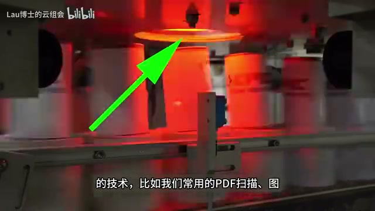
00:01:52–00:01:56 · 画面 03900:01:56–00:02:00 · 画面 040
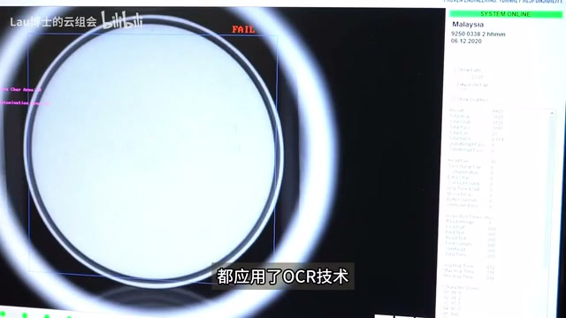
00:01:56–00:02:00 · 画面 040对于 OCR 技术而言，最重要的两个指标就是精度和速度。而如今主流的大模型的 OCR 方案都深陷三个难以突破的困境。第一个困境是长文本处理的压缩与精度的失衡。多数模型若追求文本 Tokens 的大幅压缩，会导致识别的精度骤降。若维持高精度，则需要保留大量的视觉 Tokens，增加计算成本。
00:02:00–00:02:04 · 画面 041
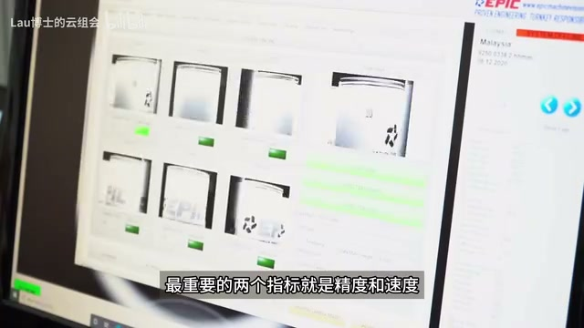
00:02:00–00:02:04 · 画面 04100:02:04–00:02:06 · 画面 042
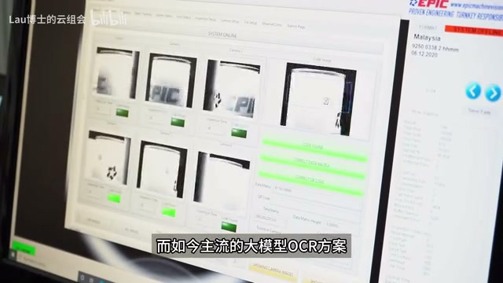
00:02:04–00:02:06 · 画面 04200:02:06–00:02:08 · 画面 043
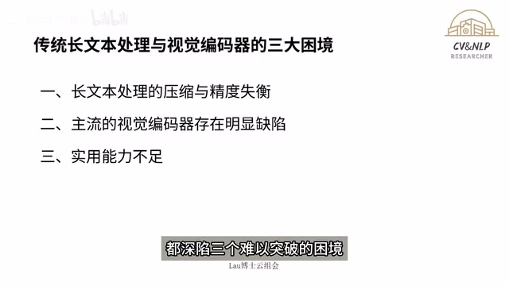
00:02:06–00:02:08 · 画面 04300:02:08–00:02:31 · 画面 044
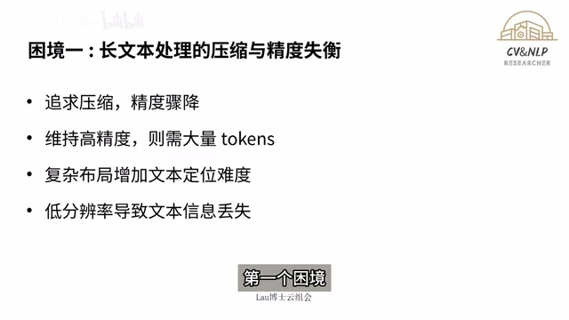
00:02:08–00:02:31 · 画面 044同时，长文本复杂的布局在低分辨率下的文本模糊的问题，进一步加剧了这一困境。
00:02:31–00:02:32 · 画面 045
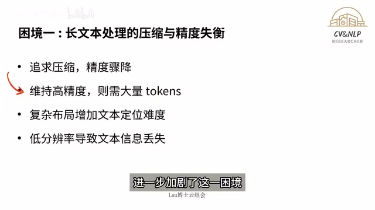
00:02:31–00:02:32 · 画面 045复杂的布局会增加文本定位的难度，低分辨率则直接导致了文本信息的丢失。双重的因素使得长文本的 OCR 性能难以保障。第二个困境是主流的视觉编码器存在明显的缺陷。以 Vary 为代表的双塔架构，虽然能通过并行线编码器的控制参数与激活内存，但需要对图像进行双重的预处理，导致部署复杂。
00:02:32–00:02:42 · 画面 046
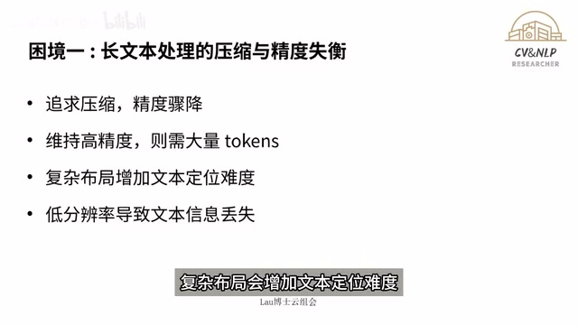
00:02:32–00:02:42 · 画面 04600:02:42–00:02:46 · 画面 047
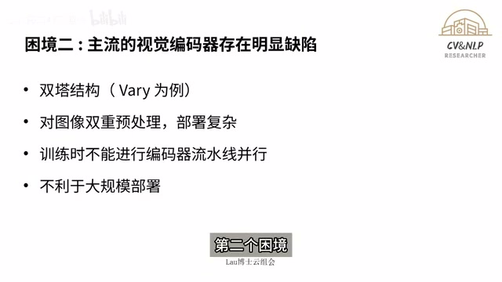
00:02:42–00:02:46 · 画面 04700:02:46–00:02:54 · 画面 048
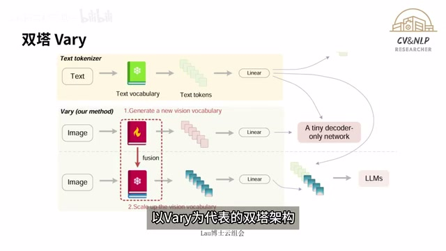
00:02:46–00:02:54 · 画面 04800:02:54–00:03:03 · 画面 049
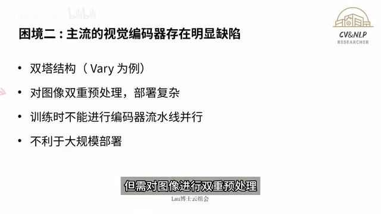
00:02:54–00:03:03 · 画面 049且训练时无法实现编码器的流水线并行，不利于大规模的应用。第三个困境是实用能力不足，其中的一个方面就是复杂的内容解析薄弱。
00:03:03–00:03:19 · 画面 050
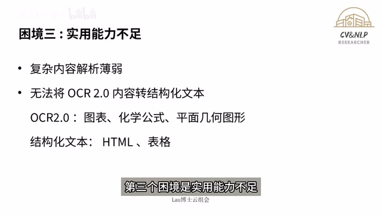
00:03:03–00:03:19 · 画面 050传统的 OCR 难以处理图表、化学公式、平面几何图形等 OCR2.0 的场景内容无法将这类视觉信息转化为结构化的文本而 DeepSeek-OCR 的突破之处在于摒弃了传统的 OCR 单一编码器或多模块分离处理的模式采用 DeepEncoder 加 DeepSeek-3B-MoE-A570M 解码器的统一端到端 VLM 架构实现低 Token 消耗、高解码精度
00:03:19–00:03:28 · 画面 051
00:03:19–00:03:28 · 画面 05100:03:28–00:03:32 · 画面 052
00:03:28–00:03:32 · 画面 05200:03:32–00:03:44 · 画面 053
00:03:32–00:03:44 · 画面 053易部署的长文本处理能力 OK。我们现在正式进入 DeepSeek-OCR 的技术拆解。
00:03:44–00:03:45 · 画面 054
00:03:44–00:03:45 · 画面 05400:03:45–00:03:46 · 画面 055
00:03:45–00:03:46 · 画面 055在训练阶段，DeepSeek-OCR 采用分阶段训练策略，先独立训练编码器，再联合训练整个模型。在推理阶段，通过编码器将图像信息压缩为少量的视觉 Tokens，再由解码器从这些 Tokens 中还原出文本内容。接下来我们来看详细的实现。DeepEncoder 的核心架构由两大部分组成，第一部分是基于 SAM-base 的视觉感知特征提取组件。
00:03:46–00:04:05 · 画面 056
00:03:46–00:04:05 · 画面 05600:04:05–00:04:08 · 画面 057
00:04:05–00:04:08 · 画面 05700:04:08–00:04:46 · 画面 058
00:04:08–00:04:46 · 画面 058以窗口注意力为主导能够高效捕捉图像中的局部视觉细节其参数量仅 80N 即使处理大量初始视觉 Token 也能保持较低的激活内存第二部分是基于 CLIP-large 的视觉、知识、特征提取组件采用密集全局注意力机制，负责整合全局信息并注入视觉知识，参数量为 300M。在这两个组件之间，论文创新的引入了一个两层的卷积压缩模块，实现 16 倍的视觉 Tokens 的下采样。以 1024x1024 的输入图像为例，DeepEncoder 首先将其分割为 4096 个补丁 Tokens，经过压缩模块处理后，Tokens 的数量减少至 256 个。
00:04:46–00:05:10 · 画面 059
00:04:46–00:05:10 · 画面 059再输入到全局的注意力组件中，这种设计既保证了局部细节的有效捕捉，又大幅的降低了全局处理的计算压力，实现了高压缩比与低激活的平衡。为了适配不同场景下的文本处理需求，DeepEncoder 还支持多种分辨率的模式，包括原生分辨率和动态分辨率两大类。原生分辨率包括 Tiny, Small, Base, Large 四种子模式。
00:05:10–00:05:16 · 画面 060
00:05:10–00:05:16 · 画面 06000:05:16–00:05:17 · 画面 061
00:05:16–00:05:17 · 画面 06100:05:17–00:05:19 · 画面 062
00:05:17–00:05:19 · 画面 06200:05:19–00:05:21 · 画面 063
00:05:19–00:05:21 · 画面 06300:05:21–00:05:23 · 画面 064
00:05:21–00:05:23 · 画面 06400:05:23–00:05:24 · 画面 065
00:05:23–00:05:24 · 画面 065对应不同书尺寸和 Tokens 的数量，Small 模式处理 640x640 的图像，输出 100 个 Tokens，适用于普通的文档动态分辨率。以 Gundam 模式为代表，通过将图像分割为多个局部块和一个全区块进行处理，能够应对报纸等超高清图像，同时避免过度碎片化。Tokens 数量可根据图像大小灵活调整。如果说 DeepEncoder 是负责高效压缩的前端。
00:05:24–00:05:28 · 画面 066
00:05:24–00:05:28 · 画面 06600:05:28–00:05:33 · 画面 067
00:05:28–00:05:33 · 画面 06700:05:33–00:05:36 · 画面 068
00:05:33–00:05:36 · 画面 06800:05:36–00:05:41 · 画面 069
00:05:36–00:05:41 · 画面 06900:05:41–00:05:42 · 画面 070
00:05:41–00:05:42 · 画面 07000:05:42–00:05:44 · 画面 071
00:05:42–00:05:44 · 画面 07100:05:44–00:05:49 · 画面 072
00:05:44–00:05:49 · 画面 07200:05:49–00:05:57 · 画面 073
00:05:49–00:05:57 · 画面 073那么 M.O.E 解码器就是承担精准还原的核心部件DeepSeek-OCR 采用 DeepSeek-3B-MoE 作为解码器
00:05:57–00:06:00 · 画面 074
00:05:57–00:06:00 · 画面 07400:06:00–00:06:11 · 画面 075
00:06:00–00:06:11 · 画面 075这种混合专家架构在 OCR 任务中展现出了独特的优势。传统的解码器往往在模型表达能力和推理效率之间难以平衡。大参数模型虽然表达能力强。
00:06:11–00:06:12 · 画面 076
00:06:11–00:06:12 · 画面 07600:06:12–00:06:42 · 画面 077
00:06:12–00:06:42 · 画面 077但推理速度慢资源消耗大小参数模型效率高。但处理复杂文本时精度不足。而 M.O.E 架构通过引入多个专家网络和门控机制在推理的过程当中。紧激活部分专家实现了两者兼得。具体来说该解码器包含 64 个路由专家和 2 个共享专家。推理时紧激活其中的 6 个路由专家和 2 个共享专家。激活的参数量约为 570M。既获得了 3B 级的模型表达能力。
00:06:42–00:06:47 · 画面 078
00:06:42–00:06:47 · 画面 078又保持了小型模型的推理效率。非常适合 OCR 这种
00:06:47–00:06:59 · 画面 079
00:06:47–00:06:59 · 画面 079领域特定的视觉语言任务。解码器的核心功能是将 DeepEncoder 的输出压缩视觉 Tokens。还原为对应的文本表示。这个过程可以看作是一个非线性的映射任务。
00:06:59–00:07:15 · 画面 080
00:06:59–00:07:15 · 画面 080即通过学习视觉特征与文本特征之间的对应关系。将维度为 N 乘上 Delayton 的视觉 Tokens 矩阵。转化为维度为 N 乘上 Detax 的文本表示矩阵。论文通过大量的 OCR 数据训练，让解码器精准的掌握了这种映射关系，即使在高压缩比下也尽可能的还原文本的内容。是不是有点 get 到 DeepSeek-OCR 强大的未来潜力了呢？那更多的技术干货、往期 PPT、生涯咨询等都在云组会的知心球里查看，评论区置顶即可加入。接下来我们重点看一下实验部分。
00:07:15–00:07:28 · 画面 081
00:07:15–00:07:28 · 画面 08100:07:28–00:07:29 · 画面 082
00:07:28–00:07:29 · 画面 08200:07:29–00:07:31 · 画面 083
00:07:29–00:07:31 · 画面 08300:07:31–00:07:33 · 画面 084
00:07:31–00:07:33 · 画面 08400:07:33–00:07:37 · 画面 085
00:07:33–00:07:37 · 画面 08500:07:37–00:07:38 · 画面 086
00:07:37–00:07:38 · 画面 08600:07:38–00:07:40 · 画面 087
00:07:38–00:07:40 · 画面 08700:07:40–00:07:41 · 画面 088
00:07:40–00:07:41 · 画面 088实验部分从多个维度验证了 DeepSeek-OCR 的性能优势，主要包括以下三个核心场景：视觉文本压缩性能测试。在 Fox 基准测试的英文文档的部分测试结果显示，当压缩比低于 10 倍时，精度可以达到 97%左右；压缩比在 10 到 12 倍时，精度保持在 90%左右。
00:07:41–00:07:47 · 画面 089
00:07:41–00:07:47 · 画面 08900:07:47–00:07:48 · 画面 090
00:07:47–00:07:48 · 画面 09000:07:48–00:07:54 · 画面 091
00:07:48–00:07:54 · 画面 09100:07:54–00:07:55 · 画面 092
00:07:54–00:07:55 · 画面 09200:07:55–00:07:59 · 画面 093
00:07:55–00:07:59 · 画面 09300:07:59–00:08:02 · 画面 094
00:07:59–00:08:02 · 画面 09400:08:02–00:08:05 · 画面 095
00:08:02–00:08:05 · 画面 095即使压缩比达到了 20 倍，精度仍能保持 60%左右。这结果证明了视觉文本压缩范式的可行性，为长文本处理的 Tokens 优化了提供了重要的参考。实际 OCR 性能测试
00:08:05–00:08:16 · 画面 096
00:08:05–00:08:16 · 画面 09600:08:16–00:08:26 · 画面 097
00:08:16–00:08:26 · 画面 097在 OmniDocBench 的基准测试中 DeepSeek-OCR 表现突出仅用了 100 个视觉 Token 就超越了使用 256 个 Token 的 GOT OCR 2.0 使用不到 800 个视觉 Token 超越了平均需要 6000 多个 Token 的 MinerU 2.0 处理幻灯片时只需 64 个视觉 Token 就能样模型
00:08:26–00:08:29 · 画面 098
00:08:26–00:08:29 · 画面 09800:08:29–00:08:32 · 画面 099
00:08:29–00:08:32 · 画面 09900:08:32–00:08:35 · 画面 100
00:08:32–00:08:35 · 画面 10000:08:35–00:08:36 · 画面 101
00:08:35–00:08:36 · 画面 10100:08:36–00:08:38 · 画面 102
00:08:36–00:08:38 · 画面 10200:08:38–00:08:41 · 画面 103
00:08:38–00:08:41 · 画面 103发挥出不错的效果。像书籍、财务报告这类文档，给 100 个 Tokens 就能达到比较高的识别和处理精度。这背后的原因也不复杂，这类文档的文本对应的 Tokens 通常是在 1000 以内，相当于把文本压缩成 Tokens 压缩比例没超过 10 倍，所以不需要太多的 Tokens 就能覆盖关键信息。
00:08:41–00:08:45 · 画面 104
00:08:41–00:08:45 · 画面 10400:08:45–00:08:46 · 画面 105
00:08:45–00:08:46 · 画面 10500:08:46–00:08:49 · 画面 106
00:08:46–00:08:49 · 画面 10600:08:49–00:08:56 · 画面 107
00:08:49–00:08:56 · 画面 10700:08:56–00:09:00 · 画面 108
00:08:56–00:09:00 · 画面 10800:09:00–00:09:16 · 画面 109
00:09:00–00:09:16 · 画面 109但报纸就不一样了它的文本对应的 Token 数能达到 4000 到 5000 个压缩比远超 10 倍单靠基础的 Tokens 的配置很难处理好这种情况下就需要切换到 Gundam 模式或者是 Gundam Master 的模式通过了分块处理的方式把报纸的内容拆成多个部分逐步解析才能达到处理精度可以达到可用的水平除此之外作者还测试了模型在特殊任务上的表现
00:09:16–00:09:19 · 画面 110
00:09:16–00:09:19 · 画面 11000:09:19–00:09:21 · 画面 111
00:09:19–00:09:21 · 画面 11100:09:21–00:09:27 · 画面 112
00:09:21–00:09:27 · 画面 11200:09:27–00:09:29 · 画面 113
00:09:27–00:09:29 · 画面 11300:09:29–00:09:34 · 画面 114
00:09:29–00:09:34 · 画面 114比如解析图表、识别化学公式、处理几何图形以及识别不同的语言的文本，结果显示它在这些场景的发挥都是很稳定的。这也进一步的说明了这个模型的适配范围确实很广，能够应对多种复杂的文档处理需求。
00:09:34–00:09:35 · 画面 115
00:09:34–00:09:35 · 画面 11500:09:35–00:09:37 · 画面 116
00:09:35–00:09:37 · 画面 11600:09:37–00:09:38 · 画面 117
00:09:37–00:09:38 · 画面 11700:09:38–00:09:39 · 画面 118
00:09:38–00:09:39 · 画面 11800:09:39–00:09:50 · 画面 119
00:09:39–00:09:50 · 画面 11900:09:50–00:09:51 · 画面 120
00:09:50–00:09:51 · 画面 12000:09:51–00:09:53 · 画面 121
00:09:51–00:09:53 · 画面 121最后我想分享一下个人看法，抛砖引玉，也欢迎同学们在评论区分享你的观点。我读完报告觉得 DeepSeek-OCR 不单是一个应用，同时也揭示了当前多模态建模的核心挑战。第一 ，超高压缩笔下关键信息保留率的问题，这指向了视觉语义增留的技术瓶颈。第二 ，复杂三维图表与艺术手写体识别精度不足的问题，这一块需要强化视觉表征的几何理解能力。
00:09:53–00:10:38 · 画面 122
00:09:53–00:10:38 · 画面 122或许引入三维的视觉传输码的架构进行优化。从更宏观的研究视角来看，DeepSeek-OCR 引发的像素输入和文本输入之争，直指当前 AI 建模的底层逻辑是否需要摆脱分词器的历史包袱，构建以视觉为核心的通用输入方式。这个观点我们在《为啥 AI 很难处理数量问题》那期视频中也讨论过。
00:10:38–00:10:44 · 画面 123
00:10:38–00:10:44 · 画面 123感兴趣的同学欢迎观看。这一问题也将推动多模态研究从模态融合向模态原生进行演进，而 DeepSeek-OCR 已为这一方提供了极具价值的技术原型。
00:10:44–00:10:57 · 画面 124
00:10:44–00:10:57 · 画面 12400:10:57–00:10:57 · 画面 125
00:10:57–00:10:57 · 画面 125转写与来源说明 · 1 个自动复核提示
保留 53 个原始语音片段，1 个片段触发自动复核提示。提示仅用于定位可能的术语、重复或识别问题，不等于已确认错误。
讲解画面为源视频截图（640×360），不是可编辑 PPT 文件。全片按每秒 2 帧扫描内容变化，逐步展开页保留；连续动画保留代表画面。清晰度受源视频限制。
原视频：paper/合集_2026-10-16_论文精读/砍掉90% Token！源神要颠覆大模型训练范式？.mp4
SHA-256：005af9f823e8cdde2e83b5f6070786a9ed18b05c7365ad9d5b67660c00098526
DeepSeek-OCR
全文按视频语音与画面制作。原论文可从上方链接下载；完整资料包保留全文、原始逐字稿、字幕和校对记录。